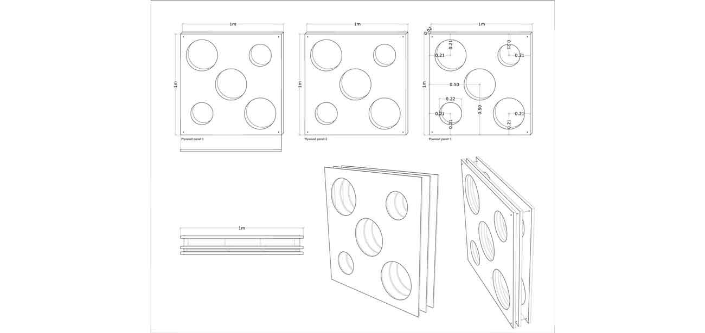
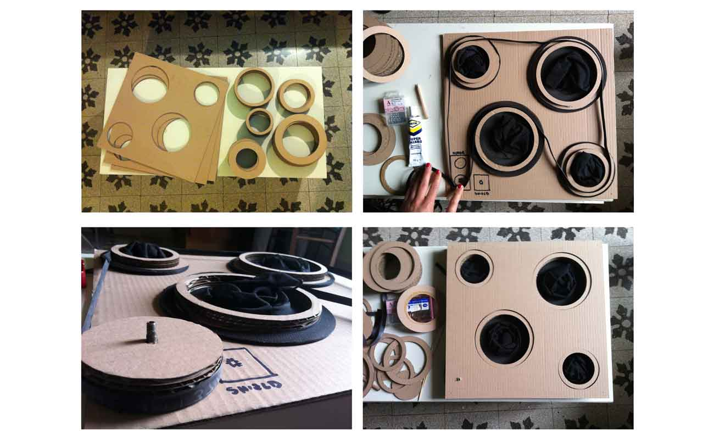
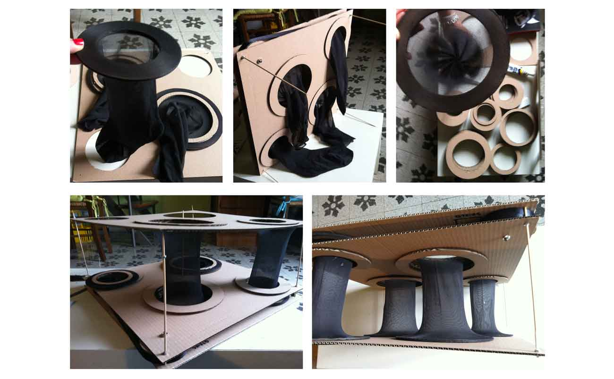

My final project is an interactive panel. I have chosen this project because I often work with museum exhibitions.
As a first step I decided that my panel must respond to a single pulse: light, because it is one of the most important variables in the protection of a work of art.
Since we are talking about light, the goal is to open and close parts of the panel.
Activities to do for the development of this project:
-3D modeling;
-Laser cutting;
-3D printing;
-Electronic Design;
-Milling;
-Welding;
-Programming;
-Assembly.
The prototype of my project is a modular 50x50cm panel.

THE COMPONENTS:
Electronic components:
-Fab Kit Miky
-Electronic limit;
-2 buttons;
-1 phototransistor;
Mechanical componenents:
-4 threaded rods;
-24 bolts;
-Toothed belt;
-3 plywood panel 1x50m;
-Stretch cotton fabric;
-4 pulleys
-1 wiper Motor
-1 power module
I started with building a prototype, to better understand the mechanical functioning. The materials used are not the final ones, they are the ones, I had available in that moment, the cheaper ones.
As you can see, the prototype is composed of three layers of cardboard.
The first two layers contain: gears, four pulleys, a toothed belt, the schild, the motor, the sensor, and the beginning of the stretch fabric.
The third layer instead hosts the end of the stretch fabric.
The mechanism is simple: there are four pulleys, connected by the toothed belt, which rotates thanks to a fifth pulley, with a different design, that is connected to the motor.
The motor starts to rotate the fifth pulley thanks to the Photoresistor. The Photoresistor, through "fab Kit Miky”, communicate with the motor, and tell it if to rotate clockwise or counterclockwise.
If there is too light, the motor starts to rotate clockwise, and it closes the elastic fabric. If there is no light the motor rotates anti-clockwise and opens the stretch fabric.
When everything will be ready, the pulleys will move all together.